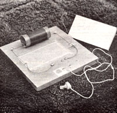
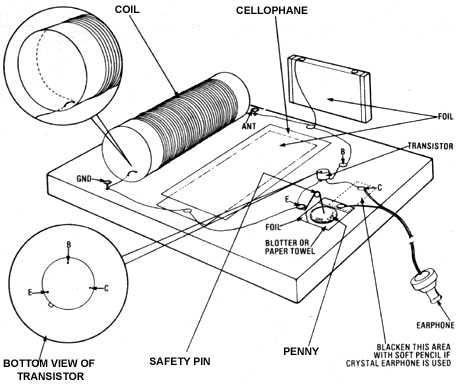

Here's a put-it-together-from-scratch radio that can be a scrounger's dream come true!
With the ever-decreasing purchasing power of the once mighty dollar, you'll probably be relieved to know that even the smallest coin of the realm still has some value. Yep, a penny will provide the same power today as it did a hundred years ago. Now I'm not announcing the end of inflation . . . but the fact of the matter is that a single red cent will power a one-transistor radio!
Better yet, this particular radio can be constructed almost entirely from materials found around the average homestead or apartment. And don't be discouraged if you lack one or more of the specified items. By using your imagination and ingenuity, you'll likely be able to find a reasonable facsimile . . . and your scavenging can result in a bona fide homemade AM radio!
A section of pine board-about 9' square-will provide a good foundation for your scrap-box project. If you simply refer to the accompanying photo of the completed radio, as I constructed it, you'll get a general idea of the finished product. Of course, you can stain or carve or engrave (use whatever talent you might have) the wooden base to your liking. After doing so, seal it-if you wish-with a couple of coats of varnish.
Constructing the coil will be the most demanding task. It's not really all that difficult, but it is time consuming. To assemble this component, locate a cardboard tube (like those that paper towels come on), and cut off a piece about six inches long. This will serve as the form for the coil.
The cylinder must then be wound with an enamel-covered copper wire, about 28 AWG. I obtained mine by carefully unwinding a solenoid rescued from a defunct eight-track tape player (it's used in the mechanism for changing tracks). However, any motor, doorbell, or similar electromagnetic device will probably give you as much of the required wire as you'll need. (For those of you who are unfamiliar with the AWG system of wire gauging, 28-AWG wire is 0.013" in diameter. You can measure it with calipers or with a micrometer. Gauges 24-0.020"-through 28 are all quite acceptable for this project.)
Poke a hole in the tube at a point 1/2 inch from the end and another hole, in line, 1/2 inch from the first. Thread the free end of the enamel-covered wire through the second hole into the tube. Then run it back out through the first hole, allowing six inches to protrude, and pull it taut . . . in order to prevent the wire from unraveling. (See the accompanying drawing for details.)
Start wrapping the wire around the tube, laying it down in an orderly manner with no turns overlapping. Continue this procedure for 120 turns, then poke another two holes-one at the end of the coil and the second 1/2 inch from that-and thread the wire through as before.
The tuning capacitor will be the next item you'll fabricate. First, carefully disassemble a package of cigarettes, saving the cellophane and aluminum foll. Flatten both materials, smoothing the cellophane by hand and the foil by passing it over the edge of a table or a pencil. Trim the metallic sheet to a convenient size (such as 3" X 6") , center it on the pine base, and tape three of its four sides to the wood. Then place the coil to the rear of the foil capacitor, securing it to the board with two thumbtacks.
Now, remove the enamel insulation from the last inch of wire on the righthand end of the coil (fine sandpaper will take it off), and thumbtack that lead to the untaped edge of the foil. One end of a 8" piece of wire (with insulation stripped from both of its tips) must be held in place by the same (unpainted) thumbtack. Make sure you have a good electrical connection, then overlay the foil with the salvaged cellophane, taping it in place and thereby insulating the metal.
Complete the capacitor by disassembling a second pack of cigarettes. This time save only the foil, and tack it (as shown) over another piece of pine board measuring about 3" X 6". Place one tip of a 9" piece of wire (ends stripped) under one of the four tacks, and anchor its opposite end to the remaining coil wire, using the tack that's labeled "ANT" in the illustration.
Of course, in the event that an empty pack of cigarettes isn't available in your home (hooray!), aluminum kitchen foil and plastic wrap (or waxed paper) will do the same jobs admirably.
The transistor may be the only item you'll have to buy. It's a germanium PNP type, which is, of course, Greek to all but those intimately involved with the daily use of such devices. Any germanium-type transistor will work, but unless you're familiar with circuit operations, I strongly suggest that you obtain Radio Shack No. 276-2007, or 2N1305 (or an equivalent).
Look at the diagram and wire the transistor into the circuit accordingly. Then install the remaining wires as shown.
The heartbeat of your radio will come from one small penny . . . without it the scrap-box radio is just that: scrap. You see, the one-cent piece is part of a galvanic system that generates electricity. An ordinary safety pin is connected, head bent at an angle, to the wire securing the "E" connection of the transistor (again, see the illustration). Its purpose is to hold the penny securely and to make electrical contact with it. A square of aluminum foil, somewhat larger than the coin, should be tacked to the base under the penny.
The only other component you'll need is the earphone. Any high-impedance unit will work, but bear in mind that an increase in the impedance of the earpiece will improve the radio's volume capability. Stereo headphones-as well as the little earphones that commonly accompany transistor radios-are low-impedance units. By themselves they won't work well with this radio. If connected to the radio through a suitable impedance-matching transformer, however, they'll do just fine. (Radio Shack No. 273-1380 is such a transformer. To use it, simply connect the red and white wires to the earphone or headphones, and the green and blue wires to the radio. The black lead is not connected to anything.)
However, if your attic yields a set of pre-World War II earphones, it's a pretty safe bet that they're of the high impedance type and should work well. You might also be able to use the earphone unit from a telephone handset, or one of the little crystal earpieces sold by Radio Shack as a replacement part for some of its kits (No. E-0007 of Kit No. 28-207). If the crystal type (shown in the illustration) is used, a resistive current path should be provided between the tack marked "C" and the foil under the penny. A purchased 10,000-ohm resistor may be connected between the two points, or you can create your own substitute by simply making a shiny graphite path between them with a soft pencil! (Blacken the area of the board indicated by the dotted line on the drawing . . . inserting the tacks afterward.)
For proper operation, your radio must have a ground and an antenna. A good ground can be assured by connecting a wire from the "GND" terminal of the radio to a cold-water pipe. (Don't use a gas line!) Verify that the pipe is metal all the way into the ground. (If a metal pipe isn't available, drive an unpainted metal stake into moist soil-to a depth of four feet or more-to serve as your ground connection.)
A piece of wire from 5 to 50 feet long-the length required will be determined by how close you are to a radio stationwill provide the necessary antenna. Attach it at "ANT", then string the wire above ground level and (for safety's sake) above head level as well.
When you're ready to power up the unit, obtain a piece of blotter paper-or paper towel-about the size of the battery foil. Saturate the absorbent material in a solution of water and salt. Place the paper on the foil. Then put the penny on the paper, being sure the coin doesn't touch the foil at any point. Finally, place the safety pin point on the penny.
Hold the earpiece to your ear and-with any luck-you'll be able to hear music! It might even be possible to pick up two stations. If so, change the position of the block of wood that forms the capacitor's moving half until you tune in only the wanted station. (This takes a certain knack, which you'll develop after some probably frustrating experimentation. Shortening or lengthening the antenna sometimes helps, too.)
There you have it, a penny-powered transistor radio that costs very little more than that one cent and needs no external source of power. Now let me see, how many pennies would it take to operate a kitchen lamp . . . ?
|
[1] China's children will charm you. [2] The Imperial City will awe you. [3] China's rural roads are packed with people, not cars. |
 |
 |